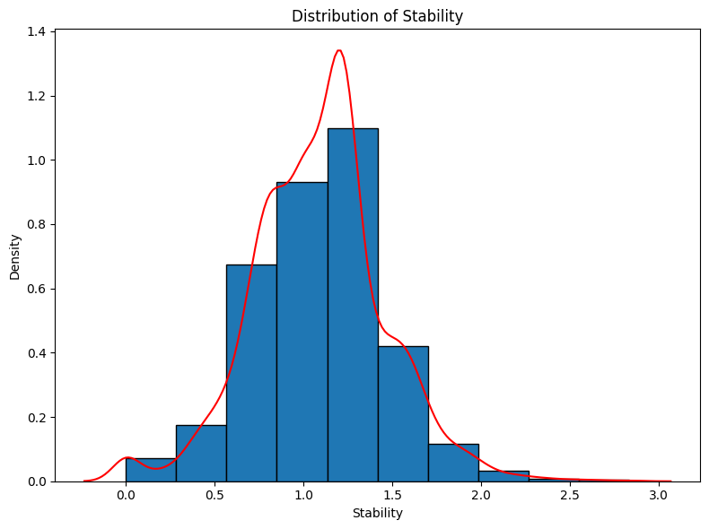
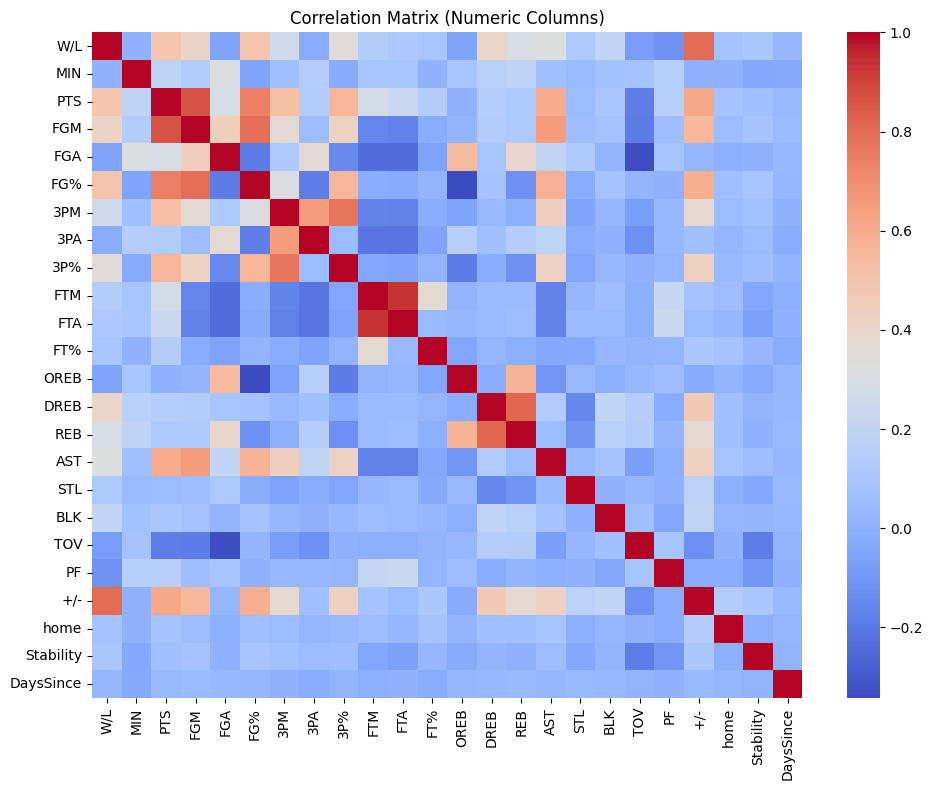
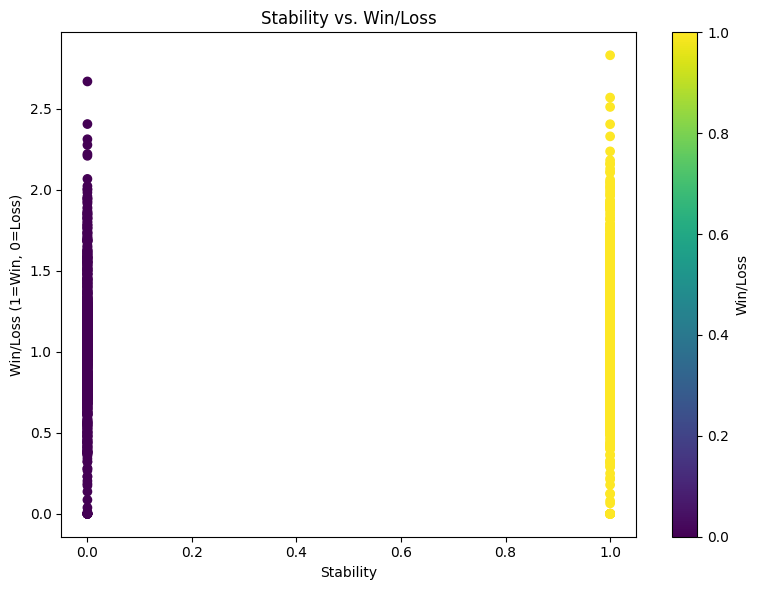

Project 1 - NBA Game Outcomes Prediction
Introduction
This project aims to predict NBA game outcomes using historical data from the 2023-2024 season. By analyzing various predictors such as days since last played, home advantage, and team stability, the goal is to develop an effective classification model that accurately forecasts game results.
Process
Data Pre-processing:
- Cleaned original dataset containing 25 predictor variables and 2,460 observations.
- Engineered features: Days Since Last Played, Home Advantage, and Stability.
- Conducted exploratory data analysis (EDA) to evaluate feature relevance.
Modeling and Evaluation:
- Implemented Quadratic Discriminant Analysis (QDA), Random Forest (RF), and Support Vector Machine (SVM).
- Split data into 75% training and 25% testing subsets.
- Compared models based on accuracy, with SVM performing best (71% accuracy).
Optimization:
- Tuned hyperparameters for SVM (optimal parameter C identified as 1).
- Conducted iterative model refinement by testing feature subsets.
Outcomes
- Developed a final SVM model predicting NBA game outcomes with 71% accuracy.
- Determined that Home Advantage is the most significant predictor, while Days Since Last Played and Stability had minimal impact.
- Demonstrated effectiveness of a streamlined model using fewer, impactful features for accurate sports outcome prediction.
Outputs
Full Model:
| Model | Training Accuracy | Testing Accuracy |
|---|---|---|
| QDA | 0.55 | 0.55 |
| RF | 0.60 | 0.56 |
| SVM | 0.59 | 0.54 |
Reduced Model With Home Advantage:
| Model | Training Accuracy | Testing Accuracy |
|---|---|---|
| QDA | 0.64 | 0.68 |
| RF | 1.00 | 0.68 |
| SVM | 0.68 | 0.71 |
  
from sklearn.ensemble import RandomForestClassifier
from sklearn.metrics import accuracy_score, confusion_matrix, classification_report, r2_score, mean_squared_error
from sklearn.discriminant_analysis import QuadraticDiscriminantAnalysis
from sklearn.model_selection import train_test_split
from sklearn.linear_model import Lasso, Ridge, LassoCV, RidgeCV, LinearRegression
from sklearn.metrics import mean_squared_error
from sklearn import svm
import numpy as np
df['Game Date'] = pd.to_datetime(df['Game Date'])
Home = []
for i in range(df.shape[0]):
if df.iloc[:, 1][i][4:6]=='vs':
Home.append(1)
if df.iloc[:,1][i][4:6]=='@ ':
Home.append(0)
df['home'] = np.array(Home)
df.loc[df['W/L'] == 'W', 'W/L'] = 1
df.loc[df['W/L'] == 'L', 'W/L'] = 0
df.loc[df['FT%']=='-','FT%']=1
Features = ['W/L','PTS', 'FGM', 'FGA',
'FG%', '3PM', '3PA', '3P%', 'FTM', 'FTA', 'FT%', 'OREB', 'DREB', 'REB',
'AST', 'STL', 'BLK', 'TOV', 'PF', '+/-']
for i in Features:
df[i] = df[i].astype(float)
def Weighting_fun(L,alpha=0.5):
Res = [np.exp(-alpha * i/5) for i in np.arange(L,0,-1)]
Res /= np.sum(Res)
#print(Res)
return Res
def Rati_Error(alpha):
X_all = []
Y_all = []
for i in np.arange(500, df.shape[0]):
Team_1 = df.iloc[i, 0]
Team_2 = df.iloc[i, 1][-3::]
Data_Previous_1 = (df.iloc[0:(i - 1), :][df.iloc[0:(i - 1), 0] == Team_1])
Data_Previous_2 = (df.iloc[0:(i - 1), :][df.iloc[0:(i - 1), 0] == Team_2])
Data_Previous_1 = Data_Previous_1[Data_Previous_1['Game Date'] != df.iloc[i, 2]]
Data_Previous_2 = Data_Previous_2[Data_Previous_2['Game Date'] != df.iloc[i, 2]]
Data_Previous_1_home = np.array(Data_Previous_1[Data_Previous_1['home'] == df.iloc[i, -1]][Features])
Data_Previous_2_home = np.array(Data_Previous_2[Data_Previous_2['home'] == (1 - df.iloc[i, -1])][Features])
W1 = Weighting_fun(Data_Previous_1_home.shape[0], alpha).reshape(-1, 1)
W2 = Weighting_fun(Data_Previous_2_home.shape[0], alpha).reshape(-1, 1)
Data_1 = np.array(Data_Previous_1_home * W1).sum(axis=0)
Data_2 = np.array(Data_Previous_2_home * W2).sum(axis=0)
Diff = (Data_1 - Data_2).tolist() + [df.iloc[i, -1]]
X_all.append(Diff)
Y_all.append(df.iloc[i]['W/L'])
X = np.array(X_all)
y = np.array(Y_all)
N = len(y)
R = 0.75
Int = int(N * R)
X_train, X_test, y_train, y_test = X[0:Int, :], X[Int::, :], y[0:Int], y[Int::]
# Hyperparameter grid
model = svm.SVC(C=1, gamma='scale', kernel='linear', random_state=42)
#print(model.get_params())
model.fit(X_train, y_train)
# Predict using the SVM model
predictions = model.predict(X_test)
accuracy = model.score(X_test, y_test)
train_accuracy = model.score(X_train, y_train)
print("Training Accuracy of SVM:", train_accuracy)
print("Testing Accuracy of SVM:", accuracy)
# Predict using QDA
model = QuadraticDiscriminantAnalysis()
model.fit(X_train, y_train)
# Predict using the QDA model
predictions = model.predict(X_test)
accuracy = model.score(X_test, y_test)
train_accuracy = model.score(X_train, y_train)
print("Training Accuracy of QDA:", train_accuracy)
print("Testing Accuracy of QDA:", accuracy)
# Random forest
model = RandomForestClassifier(n_estimators=100, random_state=42)
model.fit(X_train, y_train)
predictions = model.predict(X_test)
accuracy = model.score(X_test, y_test)
train_accuracy = model.score(X_train, y_train)
print("Training Accuracy of Random Forest:", train_accuracy)
print("Testing Accuracy of Random Forest:", accuracy)
Rati_Error(0.05)
#for a in np.linspace(0.05,0.4,10):
# Rati_Error(a)
DaysSince = []
for i in range(df.shape[0]):
team = df.iloc[:, 0][i]
op = df.iloc[:, 1][i][9:11]
current_date = df.iloc[:, 2][i]
# filter for earlier games - team
team_games_team = df[(df['Team'] == team) & (df['Game Date'] < current_date)]
if not team_games_team.empty:
last_played_date_team = team_games_team['Game Date'].max()
days_since_last_team = (current_date - last_played_date_team).days
else:
days_since_last_team = 0
team_games_op = df[(df['Team'] == op) & (df['Game Date'] < current_date)]
if not team_games_op.empty:
last_played_date_op = team_games_op['Game Date'].max()
days_since_last_op = (current_date - last_played_date_op).days
else:
days_since_last_op = 0
j = days_since_last_team - days_since_last_op
DaysSince.append(j)
df['DaysSince'] = np.array(DaysSince)
Rati_Error(0.05)
Stability = []
for i in range(df.shape[0]):
team = df.iloc[:, 0][i]
op = df.iloc[:, 1][i][9:11]
current_date = df.iloc[:, 2][i]
# filter for earlier games - team
team_games_team = df[(df['Team'] == team) & (df['Game Date'] < current_date)]
if not team_games_team.empty:
ratio_team = np.std(team_games_team['REB']/team_games_team['TOV'])
else:
ratio_team = 0
team_games_op = df[(df['Team'] == op) & (df['Game Date'] < current_date)]
if not team_games_op.empty:
ratio_op = np.std(team_games_op['REB']/team_games_op['TOV'])
else:
team_games_op = 0
j = ratio_team - team_games_op
Stability.append(j)
df['Stability'] = np.array(Stability)
Rati_Error(0.05)